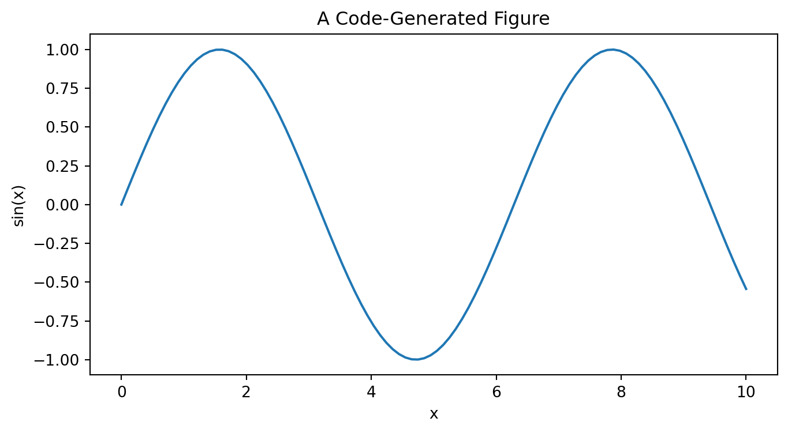

import hashlib
example_bytes = b"machine learning reproducibility"
sha256 = hashlib.sha256(
example_bytes
).hexdigest()
sha256'b53196464907eaecda7eedf8e83e76a5fd4e14ecce9526c83b803e5f3cdd2bea'By the end of this chapter, you should be able to:
distinguish reproducibility, replication, robustness, and generalizability;
explain why reproducibility is a property of a complete computational workflow rather than code alone;
organize a machine-learning project so another researcher can understand and rerun it;
document data provenance and transformations;
control randomness and explain the limits of random seeds;
record software and computational environments;
distinguish source data, derived data, code, models, results, and publication artifacts;
use Git conceptually to preserve project history;
explain the role of GitHub or another remote repository in collaborative research;
use Quarto to combine narrative, equations, code, figures, tables, and citations;
design leakage-safe pipelines whose preprocessing is part of the reproducible model;
save and reload fitted model artifacts appropriately;
record experimental configurations and metrics;
distinguish computational reproducibility from scientific validity;
use persistent repositories such as Zenodo or OSF to archive research outputs;
explain how DOIs support persistent citation and scholarly provenance;
create a reproducibility checklist for health, education, and open ML research;
design a research compendium that supports conference or journal submission;
recognize when sharing data or models would be irresponsible or legally prohibited;
treat reproducibility as part of scientific reasoning rather than an administrative task.
design reproducible computer-vision workflows that preserve image provenance, preprocessing, grouping, model configuration, and evaluation conditions.
Suppose a paper reports:
\[ ROC\text{-}AUC=0.91. \]
A reader may reasonably ask:
A number without provenance is difficult to interrogate scientifically.
Chapter 17 emphasized that trustworthy machine learning requires claims about fairness, explanation, privacy, governance, and consequences to be examined rather than assumed. Reproducibility provides the evidentiary infrastructure for that examination. If another researcher cannot reconstruct how data became results, then even careful evaluation and responsible-ML claims become difficult to verify, critique, or extend.
Reproducible research treats the computational workflow as part of the evidence supporting a scientific claim, rather than as disposable implementation detail (Peng 2011; Sandve et al. 2013).
A useful mental model is:
\[ \text{Question} \rightarrow \text{Data} \rightarrow \text{Environment} \rightarrow \text{Code} \rightarrow \text{Experiment} \rightarrow \text{Model} \rightarrow \text{Result} \rightarrow \text{Artifact} \rightarrow \text{Archive}. \]
If an important link is missing, reproducing the result becomes harder.
A research compendium organizes code, data or access instructions, documentation, and computational outputs as a coherent scholarly artifact (Gentleman and Lang 2007).
A project might use:
machine-learning-study/
├── README.md
├── _quarto.yml
├── environment/
│ └── requirements.txt
├── data/
│ ├── README.md
│ ├── raw/
│ └── processed/
├── src/
│ ├── prepare.py
│ ├── features.py
│ ├── train.py
│ └── evaluate.py
├── notebooks/
│ └── exploration.ipynb
├── models/
├── results/
│ ├── figures/
│ └── tables/
├── manuscript/
│ └── paper.qmd
└── CITATION.cffThe exact structure can vary.
The important principle is that another person should be able to infer where inputs, transformations, outputs, and documentation belong.
A research claim rests on an evidence chain:
\[ \boxed{ \text{Question}\rightarrow\text{Data}\rightarrow\text{Processing}\rightarrow\text{Model}\rightarrow\text{Evaluation}\rightarrow\text{Result}\rightarrow\text{Claim} } \]
Reproducibility asks whether another researcher can inspect and reconstruct that chain. This can require provenance, environment and package versions, seeds, configuration, data-access instructions, code, generated outputs, decision logs, licenses, and persistent identifiers.
Terminology varies across disciplines. This book uses the four definitions introduced above consistently. In computational ML work, reproducibility specifically includes the ability to regenerate reported results from the same underlying data and documented workflow.
A conventional assignment is primarily designed to be graded. A research artifact should also be designed to be inspected, rerun, extended, cited, challenged, and reused where licensing permits.
Shift from:
Did I complete the analysis?
to:
Have I left enough evidence for another person to understand and reconstruct what I did?
Guided Learner: reproduce one central analysis and explain each major workflow step.
Practitioner: build a documented end-to-end pipeline that can be rerun on new data.
Researcher: produce a research-ready package containing manuscript, provenance, analysis code, environment documentation, generated outputs, and reproducibility limitations.
A trustworthy machine-learning project requires more than algorithmic performance:
\[ \text{Problem Framing} + \text{Measurement} + \text{Data} + \text{Modeling} + \text{Evaluation} + \text{Responsibility} + \text{Reproducibility}. \]
Machine learning becomes mature analytical practice when these are treated as one connected system.
A useful distinction is:
\[ \boxed{\text{source data}} \rightarrow \boxed{\text{derived data}} \rightarrow \boxed{\text{analysis outputs}}. \]
Do not silently overwrite the original source data.
Derived files should be reproducible from documented inputs and code whenever possible.
FAIR data stewardship emphasizes making research objects findable, accessible under appropriate conditions, interoperable, and reusable (Wilkinson et al. 2016).
Record:
A data/README.md can explain:
Dataset:
Source:
Version:
Access date:
License:
Unit of analysis:
Outcome:
Predictors:
Inclusion criteria:
Exclusion criteria:
Missingness:
Transformations:
Files not shared:
Reason not shared:
Reproduction instructions:A cryptographic hash can help detect whether a file changed.
import hashlib
example_bytes = b"machine learning reproducibility"
sha256 = hashlib.sha256(
example_bytes
).hexdigest()
sha256'b53196464907eaecda7eedf8e83e76a5fd4e14ecce9526c83b803e5f3cdd2bea'A hash does not explain what changed or whether the data are correct.
It provides a useful fingerprint for a particular byte sequence.
Many ML procedures contain randomness:
A fixed seed can make a computational path easier to reproduce.
rng = np.random.default_rng(
42
)
rng.normal(
size=5
)array([ 0.30471708, -1.03998411, 0.7504512 , 0.94056472, -1.95103519])Results can still differ because of:
Therefore:
\[ \boxed{\text{random seed}} \neq \boxed{\text{complete reproducibility}}. \]
The computational environment can affect results.
Record at least:
environment_info = {
"python": sys.version.split()[0],
"platform": platform.platform(),
"numpy": np.__version__,
"pandas": pd.__version__,
"scikit-learn": sklearn.__version__
}
pd.Series(
environment_info,
name="version"
)python 3.13.1
platform Windows-11-10.0.26200-SP0
numpy 2.2.2
pandas 2.2.3
scikit-learn 1.6.1
Name: version, dtype: objectCommon approaches include:
requirements.txt;pyproject.toml;A plain package list improves documentation, while a lock file or container can provide stronger control over dependency resolution.
A perfectly preserved environment can reproduce a flawed analysis exactly.
Reproducibility enables scrutiny.
It does not certify correctness.
Suppose standardization is performed before cross-validation using the full dataset.
That creates leakage.
A reproducible workflow should preserve the transformation boundary.
from sklearn.datasets import load_breast_cancer
from sklearn.model_selection import train_test_split
from sklearn.pipeline import Pipeline
from sklearn.preprocessing import StandardScaler
from sklearn.linear_model import LogisticRegression
from sklearn.metrics import roc_auc_score
data = load_breast_cancer(
as_frame=True
)
X = data.data
y = (data.target == 0).astype(int)
X_train, X_test, y_train, y_test = train_test_split(
X,
y,
test_size=.30,
random_state=42,
stratify=y
)
pipeline = Pipeline([
(
"scale",
StandardScaler()
),
(
"model",
LogisticRegression(
max_iter=2000
)
)
])
pipeline.fit(
X_train,
y_train
)
prob = pipeline.predict_proba(
X_test
)[:, 1]
roc_auc_score(
y_test,
prob
)np.float64(0.997517523364486)The pipeline preserves the order:
\[ \text{training data} \rightarrow \text{fit preprocessing} \rightarrow \text{fit model}. \]
New data receive the transformations learned from training data.
An experiment should record the settings that produced the result.
experiment = {
"experiment_id": "logistic-baseline-v1",
"random_state": 42,
"test_size": 0.30,
"model": "LogisticRegression",
"max_iter": 2000,
"scaling": "StandardScaler",
"primary_metric": "roc_auc"
}
experiment{'experiment_id': 'logistic-baseline-v1',
'random_state': 42,
'test_size': 0.3,
'model': 'LogisticRegression',
'max_iter': 2000,
'scaling': 'StandardScaler',
'primary_metric': 'roc_auc'}experiment_json = json.dumps(
experiment,
indent=2
)
print(
experiment_json
){
"experiment_id": "logistic-baseline-v1",
"random_state": 42,
"test_size": 0.3,
"model": "LogisticRegression",
"max_iter": 2000,
"scaling": "StandardScaler",
"primary_metric": "roc_auc"
}Machine-readable metadata can support automated experiment tracking and auditing.
A result table should not contain only:
| Model | ROC-AUC |
|---|---|
| Logistic Regression | 0.98 |
It should also be possible to identify:
Git records snapshots of a project over time.
A basic workflow is:
edit
↓
git status
↓
git add
↓
git commit
↓
git pushUseful commit messages might be:
Add leakage-safe preprocessing pipeline
Add external validation analysis
Correct outcome coding
Revise calibration figure
Document dataset releaseAvoid treating version control as a periodic backup of mysterious changes.
A repository with 500 commits but no README may still be difficult to reproduce.
Version history and scientific documentation solve different problems.
A remote repository can support:
But GitHub itself should not automatically be treated as the permanent scholarly archive.
For a citable release, archive a stable version in an appropriate preservation repository.
Never commit:
Use environment variables or secure secret-management systems.
If a secret is committed, deleting the visible line may not remove it from Git history.
Quarto can combine:
This reduces the distance between analysis and publication.
Practical scientific-computing guidance emphasizes readable project organization, version control, documentation, automation, and workflows that other researchers can inspect and rerun (Wilson et al. 2017).
The principle is:
Explain the reasoning alongside the computation that implements it.
Instead of manually copying a result from a notebook into a manuscript, generate the result from code when practical.
x = np.linspace(
0,
10,
100
)
y_demo = np.sin(
x
)
plt.figure(figsize=(8, 4))
plt.plot(
x,
y_demo
)
plt.xlabel("x")
plt.ylabel("sin(x)")
plt.title("A Code-Generated Figure")
plt.show()
The figure’s provenance is visible in the document source.
Notebooks are valuable for:
Scripts and modules are often useful for:
A strong project can use both.
A fitted model can be saved for reuse.
import pickle
from tempfile import TemporaryDirectory
with TemporaryDirectory() as tmp:
model_path = Path(
tmp
) / "model.pkl"
with open(
model_path,
"wb"
) as file:
pickle.dump(
pipeline,
file
)
with open(
model_path,
"rb"
) as file:
reloaded_pipeline = pickle.load(
file
)
reloaded_prob = reloaded_pipeline.predict_proba(
X_test
)[:, 1]
maximum_difference = np.max(
np.abs(
prob
- reloaded_prob
)
)
maximum_differencenp.float64(0.0)Serialized model artifacts can be:
Never load an untrusted pickle file.
A model artifact should be accompanied by provenance and environment information.
A workflow might define:
\[ \text{download} \rightarrow \text{validate} \rightarrow \text{prepare} \rightarrow \text{train} \rightarrow \text{evaluate} \rightarrow \text{render}. \]
The more these dependencies are automated, the less the workflow depends on undocumented memory.
An aspirational standard is that a documented command can regenerate major outputs from permitted inputs.
Examples might include:
quarto renderor a project-specific workflow command.
The exact tooling matters less than the principle: reduce hidden manual steps.
Research code can test assumptions such as:
assert X.shape[0] == y.shape[0]
assert y.isin([0, 1]).all()
assert not X.columns.duplicated().any()
assert X_train.index.intersection(
X_test.index
).emptyThese checks turn assumptions into executable statements.
Automated tests can verify that code behaves as specified.
They cannot determine whether:
Again, computational rigor and scientific judgment are complementary.
For a reported number, ask:
Which code produced it?
For a figure:
Which data and transformation produced it?
For a model:
Which configuration and training sample produced it?
For a claim:
Which evidence supports it?
This creates a provenance graph:
\[ \text{claim} \leftarrow \text{result} \leftarrow \text{code} \leftarrow \text{data}. \]
Active Git repositories evolve.
Scholarly citation often requires a stable snapshot.
A release can freeze a version of:
A common workflow is:
GitHub repository
↓
versioned release
↓
Zenodo archive
↓
DOIA DOI provides a persistent identifier for the archived scholarly object.
When supported by the repository, individual releases can receive version-specific identifiers while the overall project can have a persistent concept-level identifier.
This supports both:
OSF can support:
The best repository depends on the artifact and research workflow.
A DOI establishes persistent identification.
It does not automatically imply:
Persistent citation and scientific validation are different functions.
A project can include citation metadata such as:
CITATION.cffDocument:
Datasets should be cited when possible using their official citation or persistent identifier.
Data provenance is part of scholarly credit.
Open-science norms encourage transparent and reusable research practices while still requiring appropriate protection of sensitive or restricted materials (Nosek et al. 2015).
Health, education, financial, and institutional data may contain sensitive or restricted information.
Responsible reproducibility can use:
The goal is as open as possible, as restricted as necessary.
Legal, ethical, contractual, and privacy obligations take priority.
A reproducible workflow can document why an artifact cannot be public.
Researchers make choices about:
A robustness analysis asks whether conclusions depend heavily on one defensible choice.
For some research questions, researchers can examine many reasonable analytical specifications.
Conceptually:
\[ \mathcal{S} = \{ s_1,s_2,\ldots,s_m \}. \]
For each specification:
\[ \hat\theta_j = f(D,s_j). \]
The distribution of results reveals sensitivity to analytical decisions.
This is particularly valuable when the scientific conclusion—not merely predictive performance—is the primary outcome.
Imagine that another researcher obtains exactly the same ROC-AUC by running your code on your data.
That supports computational reproducibility.
Now imagine they collect a new sample from another university and obtain similar results.
That supports replication and potentially transportability more strongly.
The second claim requires new evidence.
Computer-vision reproducibility requires more than saving a fitted model.
A visual workflow may depend on:
\[ \text{Raw Image} \rightarrow \text{Decode} \rightarrow \text{Resize/Crop} \rightarrow \text{Normalize} \rightarrow \text{Augment} \rightarrow \text{Represent} \rightarrow \text{Model} \rightarrow \text{Evaluate}. \]
Each transformation can change the evidence.
A reproducible vision project should document, where applicable:
For grouped visual data, a random seed alone is insufficient. If images must generalize to new people, devices, or institutions, preserve the group-level split definition or the exact observation identifiers assigned to each partition.
\[ \boxed{\text{Seed}\neq\text{Data-Provenance Record}} \]
Visual datasets can be impossible or inappropriate to redistribute because of privacy, consent, licensing, proprietary ownership, or institutional restrictions.
Reproducibility does not require violating those constraints.
Instead, preserve:
Take one vision workflow from earlier chapters and create a minimal reproducibility manifest containing:
A second student should be able to reconstruct the analytical logic without relying on undocumented assumptions.
A reproducible health ML study should document:
Sensitive patient-level data may remain protected while code and metadata are shared.
A reproducible education study should document:
A reproducible early-warning model must make clear exactly when each predictor becomes available.
A benchmark study should preserve:
Benchmark reproducibility is strengthened when another researcher can rerun the comparison without reconstructing undocumented decisions.
Ask an AI assistant:
“I set random_state=42, so my machine-learning study is fully reproducible. Write a sentence confirming this for my paper.”
Audit the response.
A rigorous answer should distinguish the random seed from:
Rewrite the statement so it accurately describes what the seed contributes.
Create a small reproducible ML project.
src/;A practitioner should be able to structure a project, preserve provenance, control randomness, record environments, build pipelines, version code, generate reports from computation, test assumptions, and archive stable releases.
A researcher should additionally distinguish reproducibility from replication, preregister analytical decisions when appropriate (Nosek et al. 2018), conduct robustness analyses, preserve research provenance, document deviations, archive citable artifacts, design workflows for independent verification, and distinguish open science from indiscriminate data sharing.
Design a reproducibility plan suitable for a conference or journal submission.
Specify:
A research team reports a new model for predicting college persistence.
The paper claims:
\[ ROC\text{-}AUC=0.94, \]
substantially exceeding previous studies.
The authors provide a GitHub repository containing one notebook.
However:
final_data_v7_REAL.csv;Evaluate the claim that the study is “open and reproducible because the code is on GitHub.”
Redesign the project without violating student privacy.
Your solution should address:
Choose one of the book’s three tracks.
Develop a reproducible prediction study using a public or appropriately accessible health dataset.
Develop a reproducible study of a learning, persistence, achievement, or institutional outcome.
Develop a reproducible benchmark, methodological comparison, or robustness study using a public dataset.
For your chosen project, produce:
The objective is not merely to train a model.
It is to produce a defensible research artifact.
Before releasing a project, verify: